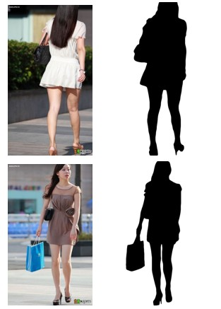
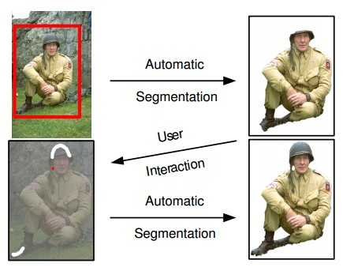
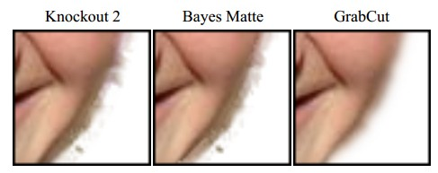
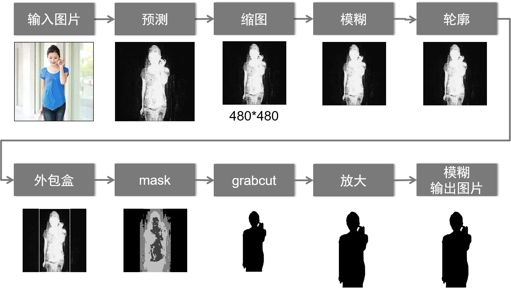
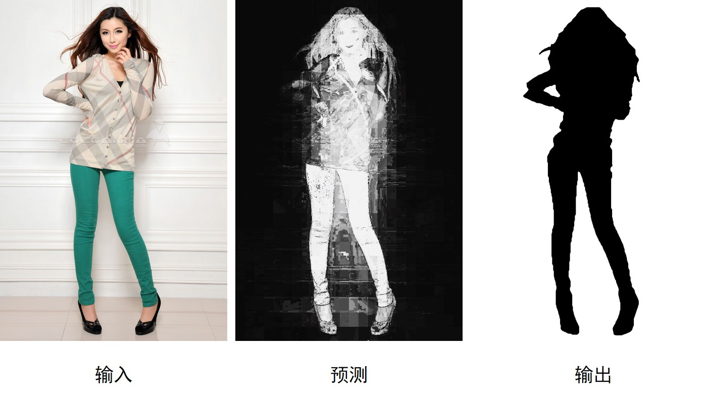
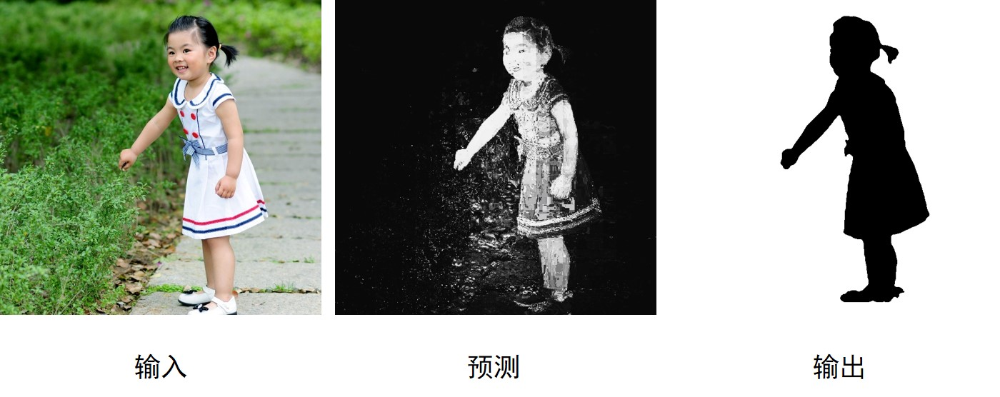

题目来自于2013年中国云·移动互联网创新大奖赛，由百度公司命题。任务说明：勾勒人物图片中的人物轮廓
任务描述：对于有人的图片，通过需要知道人在图片中的什么位置，人在图片中占有多大区域，所有这些都可以通过勾画出人的外轮廓来回答。如下面所举的例子所示，对于一幅含有人的图片，可以把人的外轮廓内部分设置为黑色，外轮廓以外部分设置白色，从而确定人的形状。需要注意的是，与人体接触的人体上的附属物如衣服、鞋帽、手提肩扛的物品等需要计算在外轮廓里。

输入要求：赛题提供5000余张的含有人的图片及其对应的标注的人外形轮廓图。选手可以基于所提供的标注图片，设计合适的算法实现从图片中提取人的外形轮廓的目的。 本任务所给出的原始图片为任务一的有人的图片，标注的人外形轮廓图与原始图片对应。
输出要求：参赛者所提供的程序实现对于提供的一组原始图片，能够生成对应的人外形轮廓图片。例如，图片00001.jpg含有人物，则程序输出名为00001-profile.jpg的图片，内容为提取的人外形轮廓。外形轮廓内部分是黑色，外形轮廓外部分是白色。
评分标准：本任务将以参赛者的程序在测试集上生成的人物轮廓图与标注的人物轮廓图的重合程度作为程序的评分标准。例如，对于一张图片，标注的人物轮廓区域，而参赛者程序给出的区域为，则在这幅图上的得分为： , 参赛选手在测试集上的得分为所有图片的平均值。
代码来自于Zhonghua Xi （received Ph.D from George Mason University in 2017. Now he is a Software Engineer at Google.）该作品在大赛中获得第三名，代码地址：https://github.com/xizhonghua/wesee/tree/master/mt
更多相关介绍可参照：http://masc.cs.gmu.edu/wiki/ZhonghuaXi
复杂对象分割有一个著名算法是GrabCut，是微软研究院的作品。只需要在目标外面画一个框，把目标框住，就可以完成效果很好的分割。
如果增加额外的用户交互（由用户指定一些像素属于目标），那么效果可以更加完美：

它的Border Matting技术会使目标分割边界更加自然和perfect：

一些TIPS：
对于赛题任务，GrabCut有明显的不足，那就是需要人工介入，指定目标和背景区域。
opencv为GrabCut的分割时提供的Mask支持4种选项：
Zhonghua Xi的解决思路是：自动为人物创建外包盒（外包盒外一定为背景），计算出每个像素为目标或背景的概率，生成Mask送入GrabCut。

训练和预测部分主要原理：
最终算法效果：


可以看到，大多情况下，算法可以较准确的分割出人像。训练集由百度公司提供，大约为5000张图像，在训练集上测试的准确率为77%。测试集包括5000张图片，公开评测结果为75.99%，平均1秒左右处理一张图片，算法的准确率和效率都较为理想。
原来Zhonghua Xi的代码是linux版本，我已经修改为windows版本，并且codeblocks中编译通过。
def.h 定义了常见参数
xxxxxxxxxxtypedef unsigned char byte;由时，在main.h文件中定义了一个全局变量：setting g_setting 这是一个类，定义在setting.h文中，内容如下所示。不过里面大多是一些标签，很多情况下可能用不到。这些标签是在开发过程中用来输出中间结果时使用。
xxxxxxxxxxclass setting {public: setting() { this->enable_gui = true; this->enable_evaluation = false; this->training_mode = false; this->training_batch_mode = false; max_training_images = 0; this->matting_batch_mode = false; this->matting_mode = false; this->max_refine_iterations = 3; this->output_prediction = false; this->output_profile = true; this->resize_mode = false; this->evaluation_mode = false; this->output_dir = "output"; this->training_database_filename = "train.bin"; } string matting_filename; string input_dir; string training_dir; int max_training_images; bool enable_gui; bool enable_evaluation; bool training_mode; bool training_batch_mode; string training_filename; string training_database_filename; bool matting_batch_mode; bool matting_mode; int max_refine_iterations; string output_dir; bool output_profile; bool output_prediction; bool evaluation_mode; string profile_filename; string profile_ground_truth_filename; bool resize_mode; string resize_filename; int resize_long_edge; bool test_mode; string test_filename; string test_profilename;};训练过程代码：
xxxxxxxxxx// open training_batch modeg_setting.training_batch_mode = true;g_setting.training_dir = "./train";get_files(g_setting.training_dir);if(g_setting.training_batch_mode) {train_batch(g_setting.training_dir);}还建立了一个类statistics，定义如下：
xxxxxxxxxxStatistics::Statistics() { this->m_channels.resize(3); this->m_rblocks = 32; this->m_gblocks = 32; this->m_bblocks = 32; this->m_xblocks = 24; this->m_yblocks = 24; this->m_postive_weight = 1.0; dim[0] = color_dim[0] = this->m_bblocks; dim[1] = color_dim[1] = this->m_gblocks; dim[2] = color_dim[2] = this->m_rblocks; dim[3] = this->m_xblocks; dim[4] = this->m_yblocks; this->m_data = cv::Mat(DIM, dim, CV_32SC1); this->m_data_count = cv::Mat(DIM, dim, CV_32SC1); this->m_data_color = cv::Mat(3, this->color_dim, CV_32SC1); this->m_xy_xblocks = 1200; this->m_xy_yblocks = 1200; this->m_data_xy = cv::Mat(this->m_xy_yblocks, this->m_xy_xblocks, CV_32SC1); this->m_stat_count = 0;}这个类里面有一个关键成员函数：
xxxxxxxxxxvoid Statistics::stat(const Mat& image, const Mat& profile){ if(image.size != profile.size) { cerr<<"size does not match, can't stat"<<endl; return; } this->m_stat_count++; int width = image.cols; int height = image.rows; double aspect = (double)width/height; int a_b = this->get_aspect_block(aspect); byte G,B,R; Mat lab_image = image.clone(); //把图像由rgb空间转换为hsv空间 cv::cvtColor(lab_image, lab_image, CV_BGR2HSV); int tx = (LONG_EDGE_TRAIN - width)/2; int ty = (LONG_EDGE_TRAIN - height)/2; for(int i=0; i<height; i++){ for(int j=0; j<width; j++){ //遍历图像各个像素 byte label = profile.at<byte>(i,j); //三通道值分别存储到B,G,R中。目前已经是hsv空间，可能是在实际操作中，他发现转换到hsv空间效果更好。但变量名字并没有更改 B = lab_image.at<Vec3b>(i,j)[0]; G = lab_image.at<Vec3b>(i,j)[1]; R = lab_image.at<Vec3b>(i,j)[2]; int x_b = (j)*this->m_xblocks/width; int y_b = (i)*this->m_yblocks/height; int r_b = R*this->m_rblocks/256; int g_b = G*this->m_gblocks/256; int b_b = B*this->m_bblocks/256; //特征有5维，分别是x,y,r,g,b，计算当前像素值应该属于哪个index Vec5i index = this->get_index(b_b,g_b,r_b,x_b,y_b); double value = 3*(label == 255 ? this->m_postive_weight : -1.0); this->m_data.at<int>(index) += value; this->m_data_count.at<int>(index)++; } }}训练结束后，会把训练模型保存在二进制文件中，调用如下函数：
xxxxxxxxxxvoid Statistics::save_data(const string& path){ byte s = 0; FILE* fout; fout = fopen(path.c_str(), "wb"); for(int ib=0;ib<this->m_bblocks;ib++) for(int ig=0;ig<this->m_gblocks;ig++) for(int ir=0;ir<this->m_rblocks;ir++) for(int ix=0;ix<this->m_xblocks;ix++) for(int iy=0;iy<this->m_yblocks;iy++){ Vec5i index = this->get_index(ib,ig,ir,ix,iy); s = SIGMOID((double)this->m_data.at<int>(index)/this->m_data_count.at<int>(index))*255; fwrite(&s, 1, 1, fout); } fclose(fout);}使用sigmoid函数，计算得到一个值，在测试过程中，也会找到这个index，然后读取这个值在预测过程中会保存到trimap中，具体可参照predict函数:
xxxxxxxxxxvoid Statistics::predict(const Mat& image, Mat& trimap) const{ int width = image.cols; int height = image.rows; byte G,B,R; int x_center = width/2; int y_center = height/2; double mean_dist = (SQR(x_center) + SQR(y_center)); Mat lab_image = image.clone(); cv::cvtColor(lab_image, lab_image, CV_BGR2HSV); int tx = (LONG_EDGE_PX - width)/2; int ty = (LONG_EDGE_PX - height)/2; for(int i=0; i<height; i++) for(int j=0; j<width; j++) { B = lab_image.at<Vec3b>(i,j)[0]; G = lab_image.at<Vec3b>(i,j)[1]; R = lab_image.at<Vec3b>(i,j)[2]; int x_b = (j)*this->m_xblocks/width; int y_b = (i)*this->m_yblocks/height; int r_b = R*this->m_rblocks/256; int g_b = G*this->m_gblocks/256; int b_b = B*this->m_bblocks/256; Vec5i index = this->get_index(b_b,g_b,r_b,x_b,y_b); byte v0 = this->m_data.at<int>(index); trimap.at<byte>(i,j) = v0; }}在预测图像时，主要使用了Matting函数，具体如下：
xxxxxxxxxxint Matting::mat( const Statistics& stat, const Mat& ori, Mat& output, Mat& predict_raw, Mat& predit_drawing){ const int THRSH_FOR_EDGES = 60; const int MAX_THRESH_FOR_EDGES = 255; Mat input = MatHelper::resize(ori, LONG_EDGE_PX); predict_raw = Mat::zeros(ori.rows, ori.cols, CV_8UC1); stat.predict(ori, predict_raw); // 图像重采样 Mat predict_s = MatHelper::resize(predict_raw, LONG_EDGE_PX); // 使用中值滤波预处理 medianBlur(predict_s, predict_s, 5); Mat threshold_output; vector<vector<Point> > contours; vector<Vec4i> hierarchy; /// Detect edges using Threshold threshold( predict_s, threshold_output, THRSH_FOR_EDGES, MAX_THRESH_FOR_EDGES, THRESH_BINARY ); /// Find contours findContours( threshold_output, contours, hierarchy, CV_RETR_TREE, CV_CHAIN_APPROX_SIMPLE, Point(0, 0) ); /// Approximate contours to polygons + get bounding rects and circles vector<vector<Point> > contours_poly( contours.size() ); vector<Rect> boundRect( contours.size() ); Rect bestBoundRect; vector<Point> betContourPoly; int best_index; for( int i = 0; i < contours.size(); i++ ) { approxPolyDP( Mat(contours[i]), contours_poly[i], 1, true ); boundRect[i] = boundingRect( Mat(contours_poly[i]) ); if(boundRect[i].area() > bestBoundRect.area()) { bestBoundRect = boundRect[i]; betContourPoly = contours_poly[i]; best_index = i; } } bestBoundRect.x -= bestBoundRect.width * 0.15; bestBoundRect.x = std::max(bestBoundRect.x, 0); bestBoundRect.width *= 1.3; bestBoundRect.width = std::min(predict_s.cols - bestBoundRect.x, bestBoundRect.width); bestBoundRect.y -= bestBoundRect.height * 0.15; bestBoundRect.y = std::max(bestBoundRect.y, 0); bestBoundRect.height *= 1.3; bestBoundRect.height = std::min(predict_s.rows - bestBoundRect.y, bestBoundRect.height); if(g_setting.output_prediction) { // draw bounding box & contour Scalar WHITE = Scalar( 255, 255, 255 ); Scalar BLACK = Scalar( 0, 0, 0 ); predit_drawing = predict_s.clone(); rectangle( predit_drawing, bestBoundRect.tl(), bestBoundRect.br(), WHITE, 2, 8, 0 ); drawContours( predit_drawing, contours_poly, best_index, WHITE, 1, 8, vector<Vec4i>(), 0, Point() ); } cout << " output ori ... ...\n"; imwrite("ori.jpg", ori); cout << " output input ... ...\n"; imwrite("input.jpg", input); cout << " output predict_s ... ...\n"; imwrite("predict_s.jpg", predict_s); Mat result; double cost = grabCut(ori, input, predict_s, bestBoundRect, contours_poly[best_index], result); output = MatHelper::resize(result, ori.cols, ori.rows); medianBlur(output, output, 7); cv::threshold(output, output, 128, 255, CV_THRESH_BINARY); output = 255 - output; return 1;}大体这个代码核心就是上述内容了，希望大家课下仔细学习。